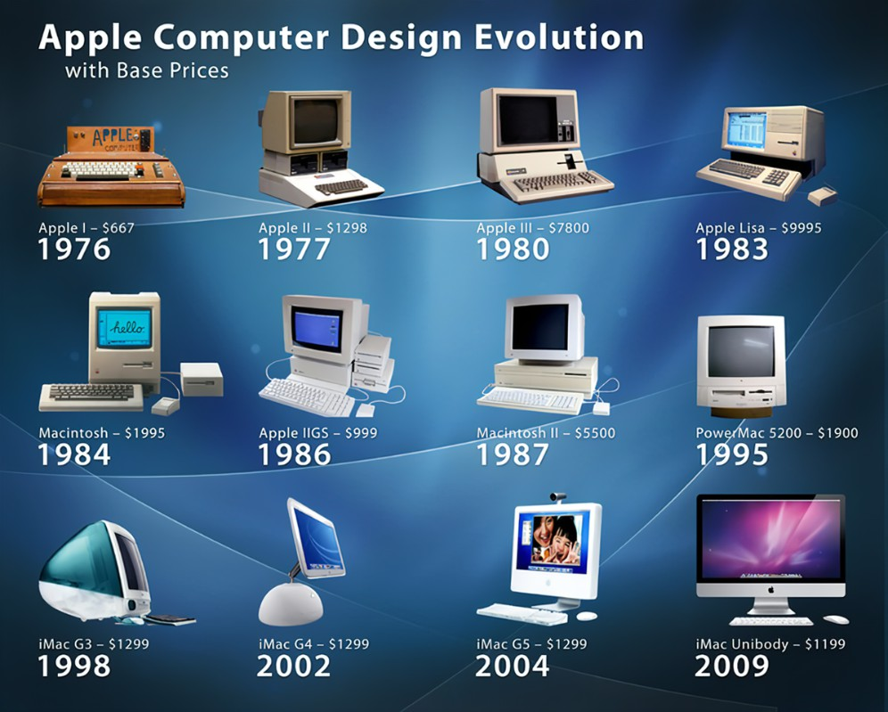
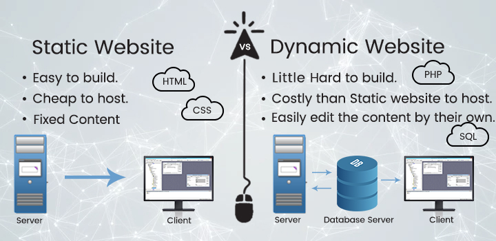

Web Terminology Life Cycle :

Web terminology refers to the specific language, concepts, jargon used in web development,
design, and internet technologies. It encompasses terms related to creating, managing, and interacting
with websites and web applications.
Introduction of Web Designing :

Web designing involves creating and organizing the visual and interactive elements of a website.
It blends creativity with technical skills to design websites that are both aesthetically pleasing
and functional.Here’s an introduction to web designing:
1. What is Web Design :
Web design refers to the process of planning, conceptualizing, and arranging content online. Today, web design goes
beyond aesthetics and includes overall website functionality. It covers both the look (layout, colors, fonts) and how
it works (interactivity, user experience).
2. Key Components of Web Designing:
-Layout: The structure and arrangement of content, images, and navigation on a webpage.
- Colors: Choosing color schemes that match the brand or purpose of the website.
- Typography: Selecting readable fonts that align with the website’s style and branding.
- Graphics and Images: Integrating icons, illustrations, and images to enhance visual appeal.
- Navigation: Designing user-friendly menus, links, and buttons to improve the user experience.
- Responsiveness: Ensuring the website looks good and works well across different devices and screen sizes.
- User Experience (UX): Focusing on how users interact with the website, ensuring ease of use and a smooth journey.
- User Interface (UI): Designing interactive elements like forms, buttons, and sliders.
3. Web Design Languages and Tools:
- HTML (Hypertext Markup Language): The backbone of web pages, defining their structure and content.
- CSS (Cascading Style Sheets): Styles and enhances the appearance of HTML elements.
- JavaScript: Adds interactivity and dynamic content to web pages.
- Design Tools: Software like Adobe XD, Figma, or Sketch for creating design prototypes.
4. Types of Web Design:
- Static Design: Fixed layouts that don’t change based on user interaction or device.
- Dynamic Design: Content and design can change dynamically, often using content management systems (CMS) like WordPress.
- Responsive Design: Adapts the layout to different screen sizes, ensuring usability across devices.
- Adaptive Design: Uses distinct layouts for different device types (e.g., mobile, tablet, desktop).
5. Principles of Good Web Design:
- Consistency: Maintaining uniformity in fonts, colors, and navigation across all pages.
- Simplicity: A clean and straightforward design that doesn’t overwhelm users.
- Accessibility: Designing websites to be usable by people with disabilities (e.g., screen readers).
- Visual Hierarchy: Organizing content in a way that naturally guides users through the site.
6. Career Opportunities in Web Design:
- Web Designer: Focuses on the visual aspects of websites.
- UI/UX Designer: Specializes in the overall user experience and interface.
- Front-End Developer: Combines design with coding to bring websites to life.
Web designing is a dynamic field that combines creativity, technology, and problem-solving to craft effective and engaging digital
experiences.
Evolution of Computing :

The evolution of computing has been a journey marked by tremendous innovation and technological advancements.
It can be divided into key stages, starting from early mechanical devices to modern-day quantum and AI-driven
computing. Below is an overview of this evolution:
1. Early Mechanical Computers (Before 1940s)
- Abacus (c. 2500 BCE): One of the earliest computing devices, used for arithmetic calculations.
- Analytical Engine (1837): Proposed by Charles Babbage, this mechanical computer was designed to be programmable using
punched cards.
- Electromechanical Relays and Tabulating Machines (1880s-1940s): Devices like Herman Hollerith’s tabulating machine were
used in data processing for the U.S. Census and marked the start of automated computing.
2. First Generation (1940s-1950s) – Vacuum Tubes
- ENIAC (1945): The first general-purpose electronic digital computer, which used vacuum tubes for calculations.
- UNIVAC (1951): The first commercially available computer in the U.S., used for business and government applications.
- Characteristics: Bulky machines, consumed a lot of power, slow processing speeds, and used machine language (binary code).
3. Second Generation (1950s-1960s) – Transistors
- Transistor Revolution (1947): Replacing vacuum tubes, transistors made computers smaller, faster, and more energy-efficient.
- IBM 7090 (1959): An example of a second-generation computer, widely used for scientific and military calculations.
- Characteristics: Introduction of assembly language, reduced size, and increased processing power.
4. Third Generation (1960s-1970s) – Integrated Circuits
- Integrated Circuits (ICs): Invented in the 1960s, these allowed thousands of transistors to be placed on a single chip, leading
to more compact and powerful computers.
- IBM System/360 (1964): A family of computers that could run the same software, marking the beginning of modern computing
compatibility.
- Characteristics: Operating systems emerged, multi-programming became possible, and high-level programming languages like COBOL
and FORTRAN gained popularity.
5. Fourth Generation (1970s-Present) – Microprocessors
- Intel 4004 (1971): The first microprocessor, which placed an entire CPU on a single chip, leading to the development of personal
computers (PCs).
- Personal Computers (1970s-1980s): The introduction of machines like the Apple II (1977) and IBM PC (1981) brought computing to
homes and small businesses.
- Graphical User Interface (GUI): Popularized by Apple’s Macintosh (1984) and Microsoft Windows (1985), GUIs made computers user-friendly.
- Characteristics: Further miniaturization, widespread adoption of microcomputers, and the rise of networks and the internet.
6. Fifth Generation (1980s-Present) – AI and Beyond
- Artificial Intelligence (AI) and Machine Learning: Modern computing is characterized by advances in AI, enabling computers to
learn from data and improve over time.
- Quantum Computing: Theoretical and practical efforts are underway to develop quantum computers, which could solve problems beyond
the reach of classical computers.
- Cloud Computing: The shift to cloud services has transformed data storage and processing, allowing scalability and remote access.
- Characteristics: Integration of AI into everyday devices, the rise of the Internet of Things (IoT), and the exploration of quantum
algorithms.
7. Future Trends in Computing
- Neuromorphic Computing: Mimics the architecture of the human brain, aiming for more efficient and human-like processing.
- Edge Computing: Decentralizes data processing, bringing computation closer to data sources (e.g., IoT devices).
- 6G and Beyond: Expected to support faster data transfer, enabling even more interconnected devices and smarter automation.
Conclusion :
The evolution of computing has progressed from basic mechanical devices to powerful quantum computers and AI-driven systems.
Each stage represents a leap in technology, pushing the boundaries of what’s possible and continuously transforming how we live,
work, and interact with technology.
Differen types of networks are as follows :

• Local Area Network(LAN): Network in a small geographical area.
• Metropolitan Area Network(MAN):Network that covers city
• Wide Area Network(WAN): Networks that connects LAN’s and MAN’s across the globe.
Web and Internet :
• WAN raised the need to share data across the globe rather than within an organization.
• This resulted in the evolution of Web also known as World Wide Web(WWW).
• Internet is known as the largest WAN.
• Web is a way to access information using internet.
Important Terms :
Network: A collection of interconnected devices, such as computers, printers, and servers, that can communicate with each other.
Protocol: A set of rules and standards that define how devices on a network connected to communicate and share information among them.
IP Address: A unique numerical identifier assigned to each device on a network, used to identify and communicate with other devices.
(try out some cmd commands : ipconfig; ping chatgpt.com)
ISP: An ISP (internet service provider) is a company that provides individuals and organizations access to the internet and other related services.
They also provide additional services such as email, online security, and home phone. When choosing an isp, it's important to consider factors
such as coverage area, speed, reliability, customer service, and price. Some popular isps include Comcast, AT&T, Verizon, and Charter Communications.
Firewall: A security device or software that monitors and controls incoming and outgoing network traffic, based on a set of predefined security rules.
DNS (Domain Name System): A system that translates domain names (such as www.example.com) into IP addresses, allowing devices to locate and connect to
websites and other network resources.
DHCP (Dynamic Host Configuration Protocol): A protocol that automatically assigns IP addresses and network configuration settings to devices on a network.
TCP/IP (Transmission Control /Internet Protocol): A set of protocols used to communicate over the internet and other networks. Mainly used for sending data over the internet.
Some basic Protocols are:
• IP : Internet Protocol
• FTP : File Transfer Protocol
• SMTP : Simple Mail Transfer Protocol
• HTTP : Hyper Text Transfer Protocol
Web Page :
• A web page is a document which is commonly written in HTML and translated by a web browser.
• A web page can be identified by entering an URL.
• A Web page can be of the static or dynamic type.
• With the help of HTML only, we can create static web pages.

Static Web Pages :
• Contents remains unchanged
• Focuses on content presentation
• Simple to design as it provides no interactivity
• Consists of content such as text, images, videos and so on.
Dynamic Web Pages :
• Allows customization of content and its appearance in browser
• Generates content on demand when user provides input
• Allows user interaction
• Date is always up to date and reliable
What is Web Designing ?
• Web design involves the creation and planning of websites which includes aspects such as website layout, content production, and graphic design.
• It combines both the technical skill and creative artistry required to create visually appealing and functional websites that enhance user experience.
• Effective web design involves achieving a balance between aesthetics and user functionality while also ensuring that the site can be easily accessed and navigated.
• Web designers use various software and tools to create and edit websites, and their work is crucial to the success of a business or organization.
• Best Example is Home Construction {Html(Structure),CSS(style),JS(logic)}.